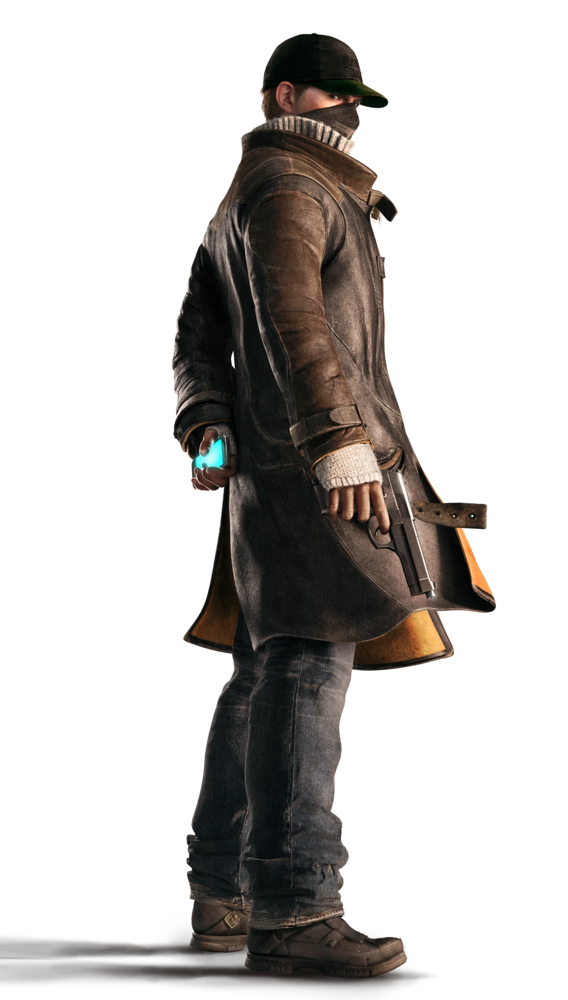
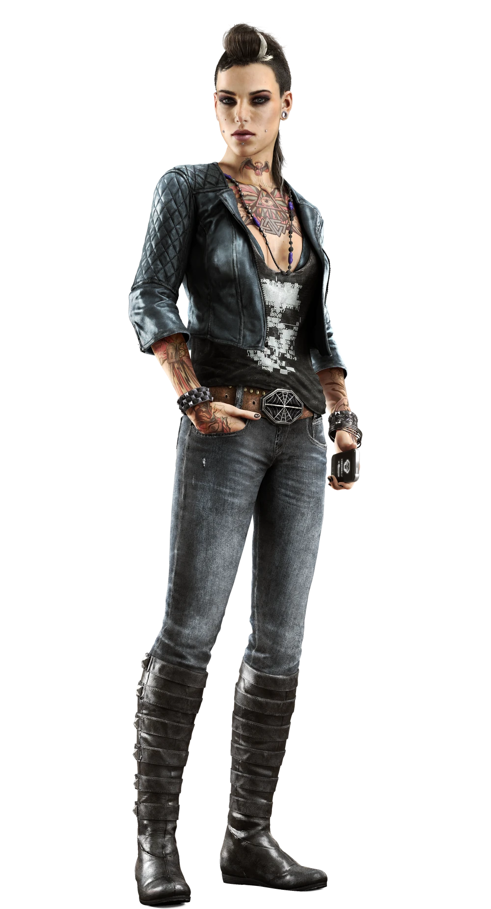
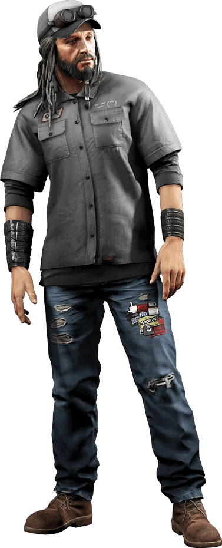

DedSec es el grupo de hackers más famoso que opera en Watch Dogs. No están afiliados con Aiden Pearce, aunque él tiene relaciones con algunos de sus miembros. El propio grupo se opone a la implementación y uso del ctOS, tienen el objetivo de probar que el sistema es defectuoso e innecesario. Los miembros del grupo hackeo varios sistemas ctOS con fines destructivos, con el fin de poner a la vista sus debilidades y vulnerabilidades. Una de las formas en que DedSec ha expresado su opinión y ha dado a conocer su presencia es a través de la incautación del sitio web oficial del ctOS. El sitio web fue incautado y posteriormente transformado en una página de publicidad ambigua. La página se volvió completamente negra y cubierta con un logotipo de DedSec, formado por caracteres ASCII. Del mismo modo, han vandalizado numerosos medios de publicidad de ctOS y otras cosas mas.
Los registros de audio dejados por uno de sus miembros, G1gg1L3s, revelan que los líderes de DedSec son referidos como el "Consejo de Daves", o simplemente "los Daves", porque todos ellos incluyen el nombre Dave en sus nombres de usuario en las comunicaciones en línea. Es revelado por Clara(bajo la identidad BadBoy17), que DedSec tiene un lado militarista, como cuando atacó sin éxito un centro de ctOS en The Loop, como resultado de este ataque, Blume agregó más guardias armados al centro. Por otro lado, la cedula DedSec que se ubica en California, son un grupo que se basa en la opinion publica y la "no violencia", no asi como la cedula en Chicago.
Aiden Pearce también conocido como "The Fox", "El Vigilante" o El Justiciero es el personaje principal del juego Watch Dogs. Conocido por ser un hacker muy hábil, que tiene acceso a los CtOS de Chicago gracias a su Analizador, y obsesionado con la vigilancia, protección y control. Las personas que amaba resultaron heridos en el pasado y están siendo atacados una vez más, por lo que se ha convertido en un vigilante para tratar de evitar esto. Su obsesión ha llegado a tal punto que incluso controla su propia familia, aunque no sean conscientes de ello. Se le ha descrito "neutral" (ni bueno ni malo). Pearce nació en 1974, es un hombre de raíces de Neozelandés, cabello castaño corto. Suele vestir botas negras, vaqueros negros, un jersey gris claro, un abrigo marrón bistre y una gorra de béisbol verde oliva. También lleva un pañuelo. Se crió en los barrios difíciles y, presumiblemente, está acostumbrado a la violencia, sus padres separados no eran felices, y su padre era violento de lo que Aiden se sentia orgulloso. El pasado criminal de Pearce lo condujo a una violenta tragedia, que le ha impuesto a hacerse con el control de toda la ciudad de Chicago. Haciendo uso de la ciudad como su arma, Pearce está en una misión para cazar a los responsables de herir a su familia. Segun Tobias o como T-bone lo llamaba, frewer Pearce sufría "un grave desequilibrio mental" Con el fin de proteger a sus seres queridos del peligro, este los vigila en secreto. Por desgracia, su familia estará en peligro una vez más, por lo que Pearce tomará la justicia por sus propias manos, enfrentándose a un sistema corrupto y utilizando la ciudad como arma.
Clara Lille (1986 - 2014) es un personaje de Watch Dogs, hacker profesional y socia de Aiden Pearce y, posiblemente de T-Bone Grady. Clara es seductora. Es peligrosa. Es la tarántula que nunca ves pero que vive justo a tu lado. Puede abrirse paso en cualquier sistema y puede sacar a la luz todos tus secretos. Ella es Badboy17. En el estadio de Chicago, Aiden necesita un plan para escapar sin ser visto por la policía, para ello llama al móvil de Badboy17 y le pide que apague las luces del estadio para facilitar su escape, pero Badboy le informa que todo está conectado al ctOS y le sería más difícil el escape. Debido a esto, Aiden pregunta el punto de acceso más cercano a él y así salir del estadio, Badboy le responde "en la siguiente sala", y que necesitará encontrar a alguien con autorización.
Raymond Kenney fue uno de los ingenieros de software contratados para ayudar a crear el ctOS, ya que tiene un amplio conocimiento del sistema. Kenney era un denunciante de la Corporación Blume, quien instaló un implante en su cabeza que alerta a la ctOS cuando está cerca. Finalmente, Kenney llegó a lamentar su papel en la creación de ctOS, ya que comenzó a darse cuenta tanto del grado de control que daba a las corporaciones y los gobiernos sobre las personas, como de los riesgos que proporcionaba si se manipulaba o funcionaba mal. Kenney también se había vuelto paranoico con respecto a las actividades de Blume, como su software de predicción de acción, una vez más debido al nivel de control que les proporcionaba. Él grabó varias de sus reflexiones sobre ctOS en registros de audio, que escondió en el mainframe del sistema informático de su lugar de trabajo. Los registros estaban encriptados para que sólo un compañero ingeniero pudiera descifrarlos y leerlos, lo que Angela Balik terminó haciendo al ser reclutada por Blume.
